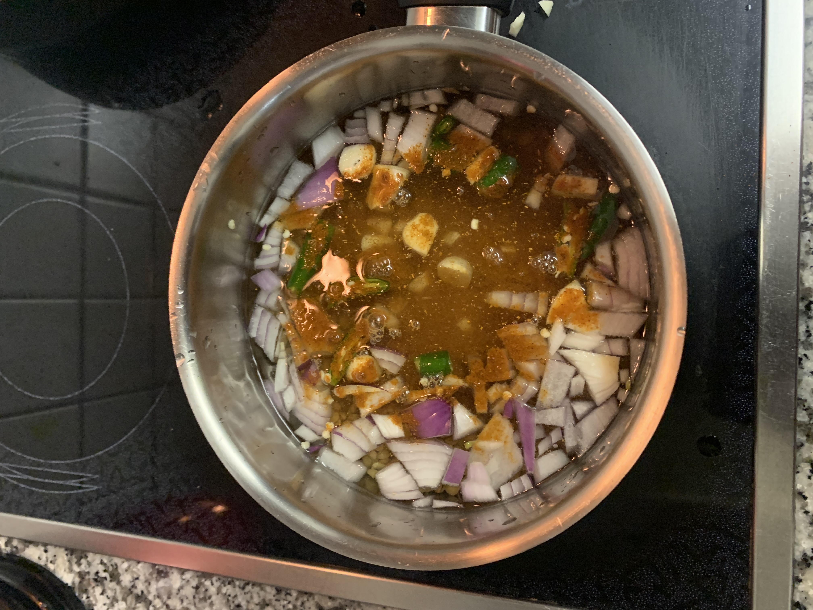
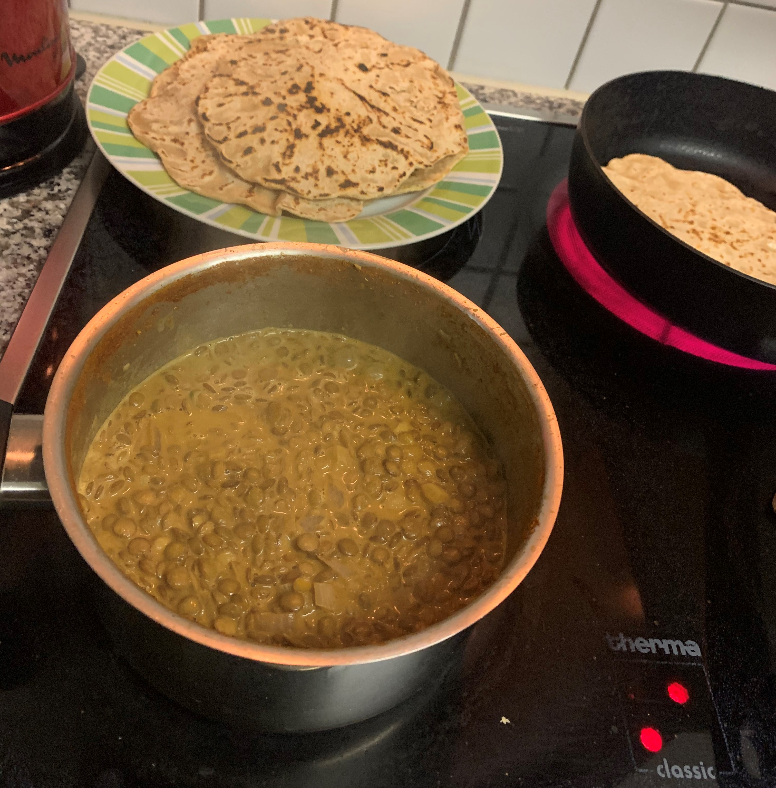

2 EL Currypowder (kann man in indischen Geschäften finden)
2 dl Kokosmilch
1 TL Salz
Zubereitung
Rotti
Das Mehl mit dem Salz und der Butter verkneten und nach und nach das lauwarme Wasser hinzufügen und ebenfalls unterkneten. Sobald der Teig geschmeidig ist, Teig in Frischhaltefolie wickeln und 15 Minuten ruhen lassen.
Aus dem Teig acht gleich grosse Kugeln formen.
Die Arbeitsflöche bemehlen und die Kugeln circa 0.5cm dick ausrollen.
Eine Pfanne auf die höchste Stufe erhitzen und den Teigfladen hineinlegen. Nach 30 Sekunden wenden und herusnehmen, sobald sich das Brot vollständig aufgebläht hat.
Die fertigen Rotti warm halten, bis das Curry fertig ist.
Curry
Einen Topf nehmen und das Wasser hineingiessen. Auf den Herd stellen, die Linsen waschen und dann in das Wasser geben.
Die Zwiebel, die Chilis und den Knoblauch kleinschneiden und in den Topf geben.
Das Currypowder dazugeben und unterrühren. Alles für circa sieben Minuten aufkochen lassen. Danach die Kokosmilch und das Salz hineingeben. Alles nochmal für 13 Minuten köcheln lassen.
